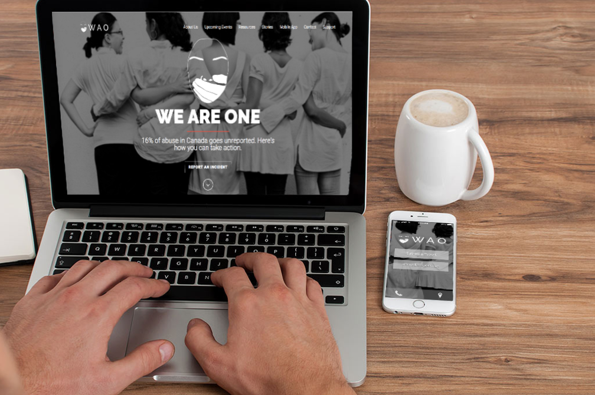

We Are One (WAO)
What is WAO?
WAO is a web app that takes in domestic abuse reports and categorizes them by priority using keywords. It was a project that started at a hackathon in March 2017 and took home the 'Best Overall Hack' first place. It is absed off the fundamental idea that no abuse should go unreported. Over the course of 36 hours, my team an I created a prodotype including the website and mobile UI, and a chatbot.
Check out our prototype here

Concept
The continuing motication behind Wao is to provide resources based on the priority and location of the report. Once a report is submitted, it will run through an algorithm to determine the severity of the report using keyword detection. Based on the location of the report, we will then provide short and long-term resources for the victim.
Role
As the head of development, I was responsible for designing and developing the chatbot and web app UI.
Next Steps?
WAO has shown proof of concept through the support of Greenhouse (University of Waterloo's social impact incubator) and mentors from Conrad and Communitech. We have developed working prototypes and have since switched gears to focus on user research, exploring the issue more and connecting with community supporters. My team and I wanted to know more about the issue and what people wanted and needed before going further with development.